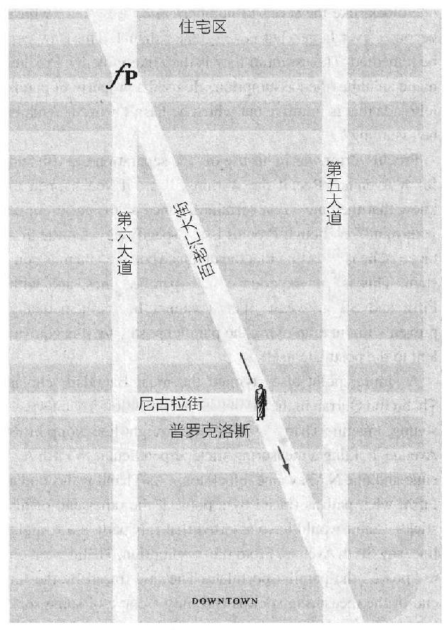
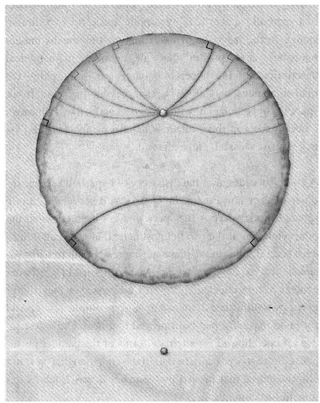
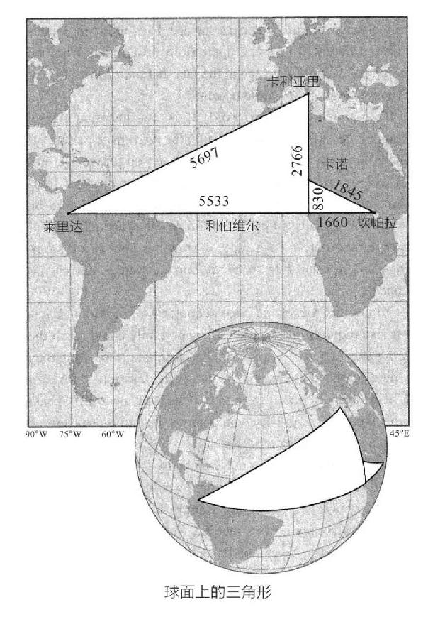
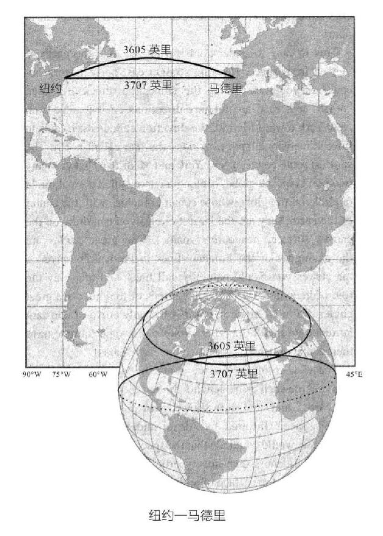

欧几里得的目标是建立与空间几何学相对应的数学结构。因此，从他的几何学中推导出的空间的性质与希腊人所理解的空间性质是一致的。但是空间是否真的具有欧几里得描述的结构，并能够像笛卡儿那样量化？还有其他可能性吗？
如果知道他的《几何原本》将在2000年内保持神圣地位，不知道欧几里得是否会高兴得扬起眉毛。但正如软件行业的人所说，2000年对于发展第2版本是一段十分漫长的时间。在那段时间里，许多领域都有了巨大变化：我们发现了太阳系的结构；获得了航行的能力，并绘制了全世界的地图；我们在早餐时不再喝稀释的葡萄酒。那时，西方世界的数学家们已经对欧几里得的第五公设——平行公设，普遍感到不满。唉，人们其实并不反感其内容，只是觉得它应该作为一个假设而不是一个定理。
几个世纪以来，那些试图证明平行公设是一个定理的数学家们，已经接近发现奇异而全新的空间类型，但他们都被一个简单的信念拦住了：他们以为，平行公设是空间的真实性质。
只有一个人，一个15岁的男孩，名叫卡尔·弗里德里希·高斯（Carl Friedrich Gauss）。就像后来发生的那样，他成为拿破仑的英雄之一。这位年轻天才在1792年的新认识让一颗全新的革命种子播撒开来。与之前的改进不同，它不是对欧几里得理论的变革和改进，而是一个全新的运作系统。不久后，那个被人们忽视了几个世纪的、奇特而令人兴奋的空间就这样被发现和描述出来了。
随着弯曲空间的发现，一个问题自然形成了：我们的空间是欧氏空间，还是这些弯曲空间中的一个？这个问题最终使物理学发生革命性的改变，数学也被逼入了进退两难的境地。如果欧几里得体系不仅仅是简单地把真实空间的结构抽象化，那么，欧几里得几何究竟在描述什么？如果平行公设可以被质疑，那么欧几里得体系的其他部分呢？在弯曲空间发现不久，所有欧几里得几何都被推翻了，然后——令人惊讶的是，数学领域的这一部分也被推翻了。当谬误的尘埃被清除干净后，不仅是空间理论，整个物理学和数学的发展也都进入了一个新的时期。
要理解找出欧几里得几何的矛盾之处并超越它有多么困难，我们必须知道他对空间的描述方式在历史上有多么根深蒂固。在欧几里得自己所处的时代，他的《几何原本》是一部经典书目。欧几里得不仅定义了数学的本质，而且他的书是逻辑性思想的典范，在教育和自然哲学中发挥了中心作用，也是中世纪的人们心智复兴时期的一项重要工作。它是1454年印刷术发明后生产的第一批书之一1，从1533年到18世纪，它是所有希腊作品中唯一一本以原始语言形式存在的书。直到19世纪，每一件建筑作品，每一幅画作，科学上的每一个理论和每一个方程，都内在地包含了欧几里得几何学。《几何原本》毫无疑问拥有如此伟大的地位。欧几里得把我们的空间直觉变成了抽象的逻辑理论，便于我们进行推断。也许最重要的是，我们必须把这一切归功于他曾堂而皇之地直接写出他的假设，而且从不声称他所证明的定理比他那些未经证实的假设更符合逻辑推理。正如我们在第一部分中所讲到的，其中一个公设，平行公设，几乎让每一位研究欧几里得的学者都感到惊讶，因为它不像欧几里得的其他公设那样简单直观。回忆它的定义：
欧几里得并没有使用平行公设来证明他最初的28个定理。到那时，他已经证明了平行公设的反面，并且有了比“公理”一词更好的陈述方式，类似于“一个三角形的任何两边长度相加必然大于第三边的长度”这样的基本事实。那么，为什么当时他还需要引进这样一个晦涩难懂的，技术性很强的假设呢？他是在去世前才写了那一章吗？
2000多年来，人类代代延续，国界不断变化，政治体系兴盛又衰亡，地球已经绕着太阳转了约1万亿英里，可思想家们仍然致力于研究欧几里得几何学，他们偶像的理论没有任何问题，只有一个微小的质疑点：讨厌的平行公设不能被证明吗？
历史上第一次尝试证明平行公设的人是2世纪时的托勒密2，他的推理十分复杂，但本质上，方法很简单：他把平行公设换成另一种形式的假设，然后从它推导出公设最初的形式。我们应该怎么看待托勒密的方法？他是否生活在一个思想自由的地方？我们可以想象，他和他的朋友们竞赛：“尤里卡！我找到了一种新的证明方式：这是个循环论证。”数学家是不会把同一错误犯两次的。他们会一遍又一遍地犯。因为事实证明，一些看起来毫不相关的假设，有些不用说都显而易见，但最终被证明是另一种形式的平行公设。平行公设与欧几里得理论的其他部分的联系微妙而深刻。在托勒密之后的几百年里，普罗克洛斯·迪多科斯（Proclus Diadochus）做出了下一个值得注意的尝试，彻底证明了平行公设。5世纪时普罗克洛斯在亚历山大接受教育，后来搬到了雅典，在那里他成为柏拉图学院的院长。普罗克洛斯花了很长时间分析欧几里得的工作。他有机会读到那些早已从地球上消失的书籍，比如欧德摩斯（Eudemus）写的《几何学历史》。这是欧几里得几何学在那个时代的版本。普罗克洛斯写了一篇关于《几何原本》第一卷的评论，这一卷是古希腊大部分几何学知识的来源。
为了理解普罗克洛斯的论证，做三件事是很有用的：首先，用先前给出的平行公设的替代形式，即普莱费尔（Playfair）的公理。第二，把普罗克洛斯的论证变得不那么专业。第三，把论证从希腊语翻译成我们懂的语言。普莱费尔公理具有如下形式：
在当今世界，大多数人都觉得地图标识街道比那些用抽象符号（比如α或λ）标记的线条更容易理解。普罗克洛斯的论证也是如此，因此我们将其放在与生活相联系的背景中，比如，想象一下纽约市的第五大道。接下来，想象另一条平行于第五大道的大道，我们称之为第六大道。记住，根据欧几里得的说法，“平行”的意思就是“不相交”，所以我们的假设是第五大道与第六大道不相交。
坐落于第六大道，位于咖啡摊贩和热狗摊之上，有一座受人景仰的建筑物，它是唯一一个拥有最高质量书籍的出版商，自由出版社（巧合的是，也是这本书的出版商）。不是有意贬低，在这个例子中，自由出版社将扮演“直线外一点”的角色。
现在，按照数学传统，记住以上规定就是关于这些大道的所有假设。尽管为了说明得形象一点，我们在头脑中有特定的附加路径，但是作为数学家，在证明中除了明确说明的性质外，不能使用附加路径的任何性质。如果你碰巧知道一家落选的出版商（至少对于这本书而言），权且叫它“随机书屋”（Random House）也在一条街上，与第五大道和第六大道有一定距离，或者在某个角落里住着一个流口水的精神病人，把这些想法都从你的头脑中除去。数学证明只能使用已明确假定的事实，欧几里得的《几何原本》中没有提到纽约市的任何性质。事实上，这是一种不合理的假设，你可能会毫不犹豫地得出以下结论：普罗克洛斯的论证是错误的。
用我们刚才的背景，现在可以把普莱费尔公理写成如下形式：
这一陈述并不与普莱费尔公理完全等价。因为就像普罗克洛斯一样，我们已经假设了至少存在一条线路或者说大道（第六大道），平行于给定的大道（第五大道）。这一点必须要证明，但普罗克洛斯用欧几里得的一条定理来保证它是对的。我们现在就接受这个观点，看看经过普罗克洛斯的论证之后，我们能否用上面的形式来证明普莱费尔公理。
为了证明一个假设，也就是说，为了使假设成为一个定理，我们必须证明，任何一条经过自由出版社的道路（除了第六大道以外）都必须与第五大道相交。从我们的日常经验看来，这是显而易见的，这就是为什么这样一条路被称为交叉路。我们所要做的就是在不使用平行公设的情况下证明这个假设。从想象第三条道路开始，这条路的唯一假设是它是笔直的，并且经过自由出版商。我们把那条路叫百老汇大街。
在普罗克洛斯的证明方法中，他从自由出版社开始，沿着百老汇大街走。想象有一条道路从普罗克莱斯恰好站着的地方开始向第六大道延伸，并垂直于第六大道，把这条新道路叫尼古拉街。有关设置展示于下一页的图中。
尼古拉街、百老汇大街和第六大道构成一个直角三角形。当普罗克洛斯沿着百老汇大街向前走的时候，这个直角三角形就会变得越来越大。最终，三角形的两边，包括尼古拉街，会变得你希望有多长就有多长。特别是，尼古拉街的长度最终会超过第五大道和第六大道之间的距离（seperation）。因此，普罗克洛斯会说，百老汇大街必然与第五大道相交，假设得证。

普罗克洛斯的证明
这个论证十分简单，却是错的。一方面，他误用了“越来越长”这一概念。尼古拉街也有可能变得更长，但不会超过一个街区的长度，就像数列1/2，2/3，3/4，5/6……一样，越来越大，但永远不会大于1。这一错误可以修正。最大的错误是，普罗克洛斯像托勒密一样引入了一个未经证明的假设。他利用了直觉上感知的平行道路的性质，但没有证明它。他具体引入了哪些假设呢？
普罗克洛斯的错误在于使用了“第五大道和第六大道的距离”。回想之前的警告，“……如果你碰巧知道……有一定距离，把这些想法都从你的头脑中除去。”尽管普罗克洛斯没有说明距离是什么，但他断言两者之间的距离是恒定的。这是我们对平行线的经验，以及对现实中第五和第六大道的经验，但如果不用平行公设，它就不能在数学上被证明：而证明等同于假设本身。
类似的观点也阻碍了9世纪伟大的巴格达学者塔比特·伊本·奎拉（Thabit ibn Qurrah）的研究。3按照塔比特的推断，想象塔比特沿着第五大道直线行走，他手上有一把垂直于第五大道和纽约大道一个街区长边的测量尺。当塔比特沿第五大道行走时，他测量尺的另一端将走出怎样的路径？塔比特断言该路径是一条直线，比如第六大道。有了这个假设，塔比特又继续“证明”了平行公设。在测量尺的一端所走的路径当然是某种曲线，但是我们可以断言它是一条直线吗？事实证明，这种权威性断言，你也能猜出来——就是平行公设。只有在欧几里得空间，与一条直线等距的点构成的才是一条直线。塔比特同样犯了托勒密的错误。
塔比特的分析涉及空间概念中的深层次问题。欧几里得的几何体系取决于如何移动和叠加图形。这是人们判断全等、等价关系，或者几何形状的标准。假设你想移动一个三角形。要做到这一点，一个很自然的方法是移动它的三条边，每一条边都是一条直线的一部分，保持长度不变，按照相同的方向移动它们。但是，如果与一条直线等距的点集不能组成一条直线，这意味着，移位的三角形的边将不会是直线，随着三角形的移动，这个图形会变得扭曲。空间是否真的有这个属性？不幸的是，塔比特并没有按照这个推理方向，进入另一个奇妙世界，而是把三角形可能扭曲的阴霾用“证明”来解释，即他关于边的等距假设一定是正当的。
在塔比特后不久，伊斯兰教对科学的支持程度开始减少。在有些地区，甚至有学者抱怨说，他住的地方，杀死数学家被列为合法的。（这可能不是因为人们鄙视书呆子，而是由于数学家有研究占星术的习惯。纵观历史，人们往往将其与黑魔法相联系，认为这是危险的，而不像今天这样有趣。）
在基督教历法中，在塔比特和他的追随者的几何作品复苏之前，反对数学家的时长几乎翻了一倍。事情发生在1663年，英国数学家约翰·沃利斯（John Wallis）在演讲中引用纳西尔·埃德丁·图西（Nasir Eddin al-Tusi）的话，他是塔比特的继承者之一。
沃利斯于1616年出生在肯特郡的阿什福德。15岁时，他看到他的哥哥正在读一本关于算术的书，他对这个领域很感兴趣。他继续在剑桥大学伊曼纽尔学院学习神学，1640年被任命为牧师，但他仍然致力于数学研究。当时正值英国内战，国王查理一世和英格兰议会之间因宗教问题斗争不断。沃利斯精于密码学，擅长破译信息，并运用他的技术来帮助国会议员。有人说，正因为此，1649年他被授予牛津大学的萨维尔几何学教授，而前任彼得·特纳（Peter Turner）因他的保皇主义观点被解职。无论出于什么原因，对于牛津大学来说，这是一次很好的换届。
特纳除了是坎特伯雷大主教的密友之外没有其他成就，他与所有政治正确的圈子保持思想一致，但从未发表过一篇数学论文。沃利斯成为前牛顿时代的英国数学家，对牛顿本人也有重要影响。今天，即使是非数学家，尤其是那些拥有某一品牌豪华汽车的人，也熟悉他的一部分工作：他引入了无穷大符号∞。
沃利斯对欧几里得几何学的改革理念是，用一种直观明显的方式取代欧几里得令人讨厌的平行公设，可以写成如下形式：
例如，如果你有一个三角形，三个角都为60度，边长是一个单位长度，接着，假设存在另一个三角形，角度也都为60度，但边长可以任意选择，比如10，10，10，或者1/10，1/10，1/10，或者10000，10000，10000。这样的三角形，边长或大或小，但都成比例，且对应的三个角度都相等，称为相似三角形。如果假设沃利斯公理是对的，忽视一些可以克服的技术细节，就可以很容易地证明平行公设，4和普罗克洛斯的推理方法很类似。沃利斯的“证明”从未得到数学家们的认可，因为他做的所有事情就是把一个公设换成另外一个。但是，把沃利斯的推理反过来看，将得出一个惊人的结论：如果存在平行公设不成立的空间，那么该空间中没有相似三角形。
谁在乎呢？麻烦在于，三角形处处都是。把一个矩形沿着对角线切割就得到两个三角形。把手放在臀部上，你弯曲的手臂和身体的一侧也形成一个三角形。事实上，虽然每个人的身体有不同，但你的身体和大多数物体，都可以被建模为近似三角形的格子：这是计算机三维图像的原理。如果相似三角形不存在，那么我们日常生活中的许多假设将不成立。在服装目录里找到一件可爱的套装，人们会假设寄来的衣服会与图片吻合，尽管实物可能是图片的几十倍大小。乘坐最喜欢的航空公司的飞机，你会相信，该飞机的机翼虽然好像是巨型喷气式飞机的机翼按比例缩小的模型制造的，但前者有着与后者同样的良好性能。请一位建筑师为你的房子加几间房，你会希望房间能与图纸相匹配。但在非欧氏空间中，这一切都不成立。你的衣服，飞机，你的新卧室都会变形。
也许这种奇异的空间在数学上是存在的，但是真实的空间有这些属性吗？难道我们还未注意到吗？也许没有。如果你的笑容有10%的偏差，你妈妈可能会注意到你的变化，但绝对注意不到0.0000000001%的差别。非欧氏空间在图形十分小时才近似于欧氏空间——而我们生活在宇宙中一个相对较小的角落。就像量子理论那样，物理定律只有在远比我们日常生活更小的世界中，才以奇异的新形式出现，弯曲空间也可能存在。不过，在我们星球正常生活的尺度上，我们无法注意到这种差异。然而，就像量子理论一样，曲率对物理理论的影响是巨大的。
到18世纪末，如果数学家们以不同的眼光看待他们的发现，他们本可以得出结论，非欧氏空间是可能存在的，并且若真的存在，那么非欧氏空间将有一些非常奇特的性质。相反，数学家们只是因不能证明这些奇异的性质会导致某种矛盾而感到沮丧，因此依然支持欧几里得空间。
接下来的50年发生了一场秘密革命。在一些国家，新型的空间逐渐被发现。直到19世纪中叶，学者们研究了德国格丁根刚去世的一位老人的论文，才知道非欧几里得空间的秘密。而那时，大多数发现非欧氏空间的人，和这位老人一样，都去世了。
在1855年2月23日的哥廷根，5一位因欧几里得而深陷攻击的老人躺在冰冷的床上，十分衰弱，只为每一次呼吸而战斗。他虚弱的心脏几乎不能泵血，他的肺里充满了液体。他的怀表滴答滴答地记录着在地球上所剩无几的时间。它停止了。几乎在同一时刻，老人的心脏也停止了。这是一种象征性的描述手法，通常只有小说家才使用。
几天后，老人被葬在他母亲未带标志的墓旁。他死后，人们发现他的房子里藏满了大量的钱，这些钱藏在书桌、橱柜、桌子上。他的房子很简朴，书房里只有一张小桌子、一张书桌和一张沙发，房间只能被一线光束照亮。小卧室没有暖气。
在他一生的大部分时间里6，他都是一个不快乐的人，几乎没有亲密的朋友，也不太悲观。几十年的时间都在大学教书，但他认为这是“一项繁重的、令人难以满足的事业”。7他认为“如果没有神，这个世界可能毫无意义”，8但他无法说服自己成为一个信徒。他赢得了许多荣誉，但对于这些荣誉，他写道，他的悲伤是喜悦的百倍之多。9他是反对欧几里得革命中的中心人物，但他从不希望将自己暴露出来。对于数学学者来说，无论当时还是现在，这个人与阿基米德以及牛顿一道，是世界历史上最伟大的数学家之一。
卡尔·弗里德里希·高斯（Carl Friedrich Gauss）于1777年4月30日出生在德国布伦瑞克，那一天是牛顿去世50周年。他来自一个没落城市的穷苦街区，这座城市距离最繁华的时期已有150年。他的父母按德国的说法是“半公民”的平民阶级，母亲多萝西娅是一个文盲，当过女佣。父亲格布哈德（Gebhard）做过各式各样卑微的工作，从挖沟渠和砌砖到为当地殡葬业记账。
给诸位一个警示：有时人们说一个人“工作勤奋、诚实”，并不是一个好迹象。你会感觉到自己在等待另一只意外的鞋子掉下来。刚才给读者预先提示过，接下来我们就可以确定地说：格布哈德·高斯是一个勤劳而诚实的人。
关于卡尔·高斯的童年有很多故事。他几乎可以在说话之前做算术。你可以在脑海之中想象出一幅画面：一个小孩指着路边小贩的食品摊，哀求他的母亲：“我饿了！我想要！”然后，在母亲付钱之后他哭了，因为他不知道怎么说“他把你的钱多算了35美分。”显然，这与事实相差不远。高斯早期最著名的天才故事发生在一个周六，当时高斯已经3岁了。他的父亲正在为一群工人发每周的工资。计算过程花了一段时间，格布哈德不知道他的儿子正在看着这一切。假设格布哈德有一个心智普通的儿子，两到三岁，比如叫尼古拉吧。在这一刻，一般会发生的事情是，尼古拉看着父亲在计算，扔下玻璃奶瓶，几乎一口气喊道“对不起”，接着是“我想要更多牛奶”。不同的是，卡尔看着父亲在计算，说了一些这样的话，“你加错了，应该是……”
格布哈德和多萝西娅都没有对这个小孩进行过任何额外训练；事实上，根本没有人教过卡尔算术。对大多数人来说，这就好像发现尼古拉凌晨两点笔直地坐在床上，用古阿芝特克语说着话，仿佛被附体了一般，如果不是被撒旦附体，也应该是一个至少10岁的孩子。但对卡尔的父母而言，这类场景他们已经很习惯了。到那时，小卡尔已经自己学会了阅读。
不幸的是，格布哈德培养儿子天资的方法，并不是雇佣一个私人教师，把他送到蒙特梭利学校。这是可以理解的，因为他家境贫穷，而且玛丽亚·蒙特梭利（Maria Montessori）在上个世纪还没有出生[1]。尽管如此，格布哈德可能还是找到了一些鼓励儿子接受教育的方法。不同的是，他给卡尔分配每周的任务，检查他的工资单，有时还把他拉出来逗他的朋友们，仿佛搞一种“孩子的畸形秀”。小卡尔视力很差，有时看不清父亲在石板上写的数字，因为他太害羞，不敢说什么，只是坐在那里接受失败。不久，格布哈德派卡尔在下午工作，用亚麻纺纱来补充家庭收入。
接下来几年，高斯公开表示对他的父亲不屑一顾，称他“专横、粗野、不文雅”。10幸运的是，卡尔的家人中有两个人十分支持他，并珍视他的天赋：他的母亲和他的舅舅约翰，也就是多萝西娅的哥哥。当格布哈德不那么重视儿子的天赋，认为正规的教育毫无意义时，多萝西娅和约翰选择相信卡尔，并处处努力地抵抗格布哈德的反对。从他出生的那一刻起，卡尔就成了多萝西娅的骄傲和欢乐源泉。几年后，卡尔带着他的一个上大学的朋友沃尔夫冈·伯里亚（Wolfgang Bolyai）来到他简陋的家，尽管伯里亚离富人还有一定距离，但碰巧是一个匈牙利贵族。多萝西娅把卡尔的朋友拉到一边，以一种看起来仍然很时髦的方式，问卡尔是否真的像每个人说的那样聪明，如果有的话，会引领他去往何方。伯里亚回答说，卡尔注定要成为欧洲最伟大的数学家。多萝西娅激动得大哭起来。
卡尔在7岁的时候进入了他的第一所学校——一所当地的文法学校就读。这所学校与笛卡儿八岁进入拉夫赖士（La Fleche）的耶稣会学校十分不同。相反，高斯上的第一所学校可以用“肮脏的监狱”到“地狱之洞”之间的词语来描述。“肮脏的监狱”“地狱之洞”学校是由一个叫比特纳（Buettner）的“监狱长”“恶魔”一样的校长管理，他的名字在德语中的意思很明显，是“照我说的做，否则我揍你”。在学校的第三年，卡尔终于被允许学习他在两岁时就能做的算术。
在算术课上，比特纳喜欢通过让学生们累加大量的数来激发他们对数学的兴趣，其中一些数长达100多个数字。比特纳显然觉得自己不值得做这样的娱乐题目，所以他总是布置给学生大量的数，而他可以轻松地用各种各样的公式算出，但这些公式他从没有和蔼地与学生在课堂上分享。
一天，比特纳让学生把数从1加到100。布特纳一讲完问题，他最年轻的学生卡尔就把石板翻转给出答案。过了一个小时，其他人才算完。当比特纳对石板进行仔细检查时，他发现卡尔是全班50人中唯一一个算对的，并且石板上没有留下任何计算的迹象。很明显，卡尔发现了求和公式，用心算给出了答案。
可以推测出，高斯发现如果不把单个数相加，而是把1到100的数两两相加，那么累加过程可以这样重新安排：把100和1相加，99和2相加，98和3相加，以此类推。最后可得到50项数，每一项都等于101，所以从1到100的所有整数的和一定是100的一半乘以101，即5050。这是毕达哥拉斯学派已经知晓的一个特殊公式。事实上，这是他们的秘密社团所使用的密码：数字1到任意数的总和等于最后一个数的一半乘以这个数加1。
比特纳吓了一跳。他很快就把鞭子抽在落后者身上，他也是欣赏天才的人。高斯后来在大学里教数学，从未鞭打过学生，但他对天才的欣赏和对天资愚钝学生的蔑视，似乎是比特纳传递给他的。几年后，卡尔会对一个班的三类学生感到厌恶，他写道：“一类学生准备得太少，另一类准备得不够多，第三类学生既缺乏准备也缺少天赋。”11他对这三类学生的评价代表了他对教学的普遍态度。就学生而言，他的大部分学生都对他当老师的能力同样不屑一顾。
比特纳用自己的钱从汉堡购得最前沿的算术教科书。也许这让卡尔终于找到了他迫切需要的导师，卡尔很快地读完了这本书。不幸的是，这本书没能挑战到他。在这一点上，比特纳不仅是一位数学家，也是一位技艺高超的演说家，他说：“我不能再教他了。”于是他放弃了，大概这样他就能再次专注于鞭笞那些不那么有天赋的学生，因为他们开始感到被忽视了。
但是比特纳并没有完全置卡尔的天赋于不顾。他把卡尔交给才华横溢的17岁助理约翰·巴特尔斯（Johann Bartels），让他看看能做些什么。当时，约翰有一项很吸引人的工作，那就是做羽毛笔，然后教比特纳的学生如何使用它们。比特纳知道巴特尔斯也对数学很有热情。不久，这两个九岁和十七岁的孩子一起学习，改进课本里的证明，互相帮助发现新的数学概念。几年过去了，高斯成为一个少年。任何有过青少年时期的孩子、认识一个青少年，或者经历过青少年时期的人，都知道这个时期意味着许多麻烦。对高斯而言，唯一的问题在于为谁制造麻烦？
今天，做一名叛逆的青少年可能意味着和舌头上都戴着钻石纽扣的女孩一起过夜。而在高斯的年代，把身体刺穿的人可能已经被留在战场上，反抗更多地来自“内在”层面。当时德国的大型知识分子运动被称为Sturm und Drang，即“风暴和压力”。
任何时候，德国的社会运动都能很好地利用“风暴”（storm）这个词，必须要小心，这个词是由歌德和席勒（而不是希特勒和希姆莱）发明的。它宣扬对个体天赋的崇拜和对既定规则的反抗。虽然高斯通常不被认为是知识运动的追随者，但他是一个天才，他按照自己的方式行事：他不反对他的父母或政治体系；他反对欧几里得。
12岁时，高斯开始批评欧几里得的《几何原本》。和其他人一样，他把注意力集中在平行公设上，但他的批判新潮而奇异。与之前的所有人不同，高斯试图寻找一种形式，既不是一种更容易接受的假设形式，也不需要通过别的假设来证明它。相反，他质疑平行公设是否真的有效。高斯在思考，有没有可能，空间实际上是弯曲的？
到15岁时，高斯成为历史上第一位接受欧几里得平行公设不成立时，几何学依然在逻辑上自洽的数学家。当然，他还远远不能证明或者创造出这样的几何学。尽管高斯有天赋，但在15岁的时候，他仍然有成为另一个只会挖坑的人的危险。幸运眷顾了高斯和科学的发展，他的朋友巴特尔斯认识一个人，他又认识另一个人，这个人又认识一个叫费迪南德（Ferdinand）的人，此人是不伦瑞克的公爵。
通过巴特尔斯，费迪南德听说了这个有数学天赋的前途无量的年轻人。公爵提出愿意支付他大学期间的账单。这样一来，卡尔的父亲成为他唯一的绊脚石。格布哈德·高斯似乎相信，仅有的办法就是继续前进，深入研究下去。在此，多萝西娅没有读过任何一本她儿子想学的书，但依然表态了。她支持儿子上大学，从而卡尔被允许接受上学资助。15岁时，他进入了当地的大学预科学校，大致相当于一所高中。1795年，18岁的他进入了哥廷根大学。
公爵和高斯最后成了好朋友。甚至在大学毕业后，公爵也继续支持他。高斯肯定知道这种情况不会永远持续下去。有传言说，公爵的慷慨解囊让他的财富流失速度远超过他的收益，而且不管怎样，公爵都已经六十多岁了，他的继承人可能没有那么大方。然而，接下来的十几年是高斯的思想最为深刻的时期。
1804年，他爱上了一个善良而快乐的年轻女人约翰娜·奥斯提夫（Johanna Osthoff）。他被她迷住了。高斯原本在生活中经常会显得傲慢自大，因为她而变得谦虚而自我贬低。他给他的朋友伯里亚写信12：
卡尔和约翰娜在1805年结婚。第二年他们生了一个男孩，约瑟夫（Joseph），1808年，女儿明娜（Minna）降生了。但幸福并没有持续。
1806年的秋天，并非疾病，而是在一场抗击拿破仑的战役中，一颗步枪的子弹夺走了公爵的生命。高斯只能站在哥廷根大学的窗户边，看着一辆马车载着他那受致命伤的朋友和恩人离开。具有讽刺意味的是，因为高斯的在场，拿破仑后来没有毁灭这座城市，他评论说：“所有时代最重要的数学家都住在那里。”
公爵的去世自然带来了高斯家庭的经济困难。事实证明，这还只是困难的开头。在接下来的几年里，高斯的父亲和支持他的舅舅约翰都去世了。接着，在1809年，约翰娜生下了他们的第三个孩子路易斯（Louis）。明娜出生时生活已经很艰难，但路易斯的出生让约翰娜和孩子都得了重病。一个月后，约翰娜去世了。不久之后，他们的新生儿也夭折了。在短短的一段时间里，高斯的生活经受了一重又一重悲剧。而且还没有结束：明娜也命中注定在很小的时候死去。
高斯很快再婚，然后又生了3个孩子。但对他来说，约翰娜死后，生活似乎再也没有给他带来多少欢乐。他给伯里亚的信中写道13：“在我的生命中，我确实赢得了很多世上的荣誉。但相信我，我亲爱的朋友，悲剧像一条红缎带一样，在我的生活中编织着。”
在1927年去世前不久，高斯的一个孙子在祖父的报纸上找到了一封信，上面带着泪痕。他的祖父写道：
高斯本不会是有史以来最伟大的数学家之一，因为他对数学的许多领域并没有很深的影响。然而，他有时被认为是一个过渡性人物，限制了从牛顿开始的发展，而不是为后代奠定基础。其实他在空间几何学方面的研究并不是这样的：他的工作最终让数学家和物理学家们忙碌了一个世纪。只有一件事阻碍了他的革命性发展。他把工作保密。
当高斯于1795年来到哥廷根的时候，他对平行公设产生了浓厚的兴趣。
作为业余爱好之一，高斯的老师亚伯拉罕·卡斯特纳（Abraham Kaestner）收集了关于这个公设的历史文献。卡斯特纳甚至有一个学生，格奥尔格·克鲁格（Georg Kluegel），在论文中分析了28次证明平行公设的失败尝试。然而，无论卡斯特纳还是其他人都不愿意接受高斯的猜想：公设可能不成立。卡斯特纳甚至说，只有疯子才会怀疑平行公设的有效性。高斯把想法自己留着，尽管事实证明，他在一本科学杂志上发表了他的想法，直到他死后43年才被发现。在随后的生活中，高斯对涉猎写作的卡斯特纳不予理睬，14视其为“诗人中的顶尖数学家和数学家中的顶尖诗人”。
1813年至1816年，作为哥廷根大学数学天文学的教授，高斯终于取得了自欧几里得以来一直在等待出现的决定性突破：他在一个全新的非欧空间里发展了和三角形各部分有关的方程，该结构在今天被称为双曲几何学。到1824年，高斯已经构建了一套完整的理论。在那一年的11月6日，高斯写信给T.A.托里努斯15————他是一位在数学上涉猎很深的律师，“假设三角形的三个角之和小于180度，就会产生一个特殊的几何形状，与我们现有的（即，欧氏的）三角形有很大不同，但理论上十分自洽，我对自己已经发展出的理论相当满意。”
高斯从来没有公开过这封信，并且坚持要求托里努斯和其他人不要把这个发现公开。为什么？不是因为害怕教会，而是害怕教会的残余势力，那些世俗的哲学家。
在高斯生活的时代，科学和哲学并没有完全分离。物理学还不叫“物理”，叫“自然哲学”。虽然科学推断不再受到死亡的惩罚，但从信仰或简单的直觉中产生想法通常被认为是同样有效的。有一种时尚让高斯觉得很好笑，称为“桌上敲击”。一群聪明的人围着桌子坐着，双手放在桌子上。大约半个小时后，大概是他们感到无聊了，桌子就会开始移动或转动。人们认为这是来自死者的精神信息。至于食尸鬼究竟发出了什么信息人们是不清楚的，尽管有一个明显的结论是，死人喜欢把他们的桌子放置离墙远的地方。有一次，整个海德堡法律学院的职工在桌子穿过房间的时候，持续跟了一段时间。可以想象，一群满脸胡须、身穿黑色西装的法学家一边踱步一边努力将手放在他们指定的地点，利用动物的磁性来让桌子运动，而不是靠推动。这一行为对高斯所生活的世界来说是合理的；但人们不认可欧几里得这一点却不太合理。
高斯看到过太多的学者卷入浪费时间的争执中，很少有人冒险沉入自己的世界。例如，高斯很尊敬沃利斯（Wallis）的工作，但他与英国哲学家托马斯·霍布斯（Thomas Hobbes）16就在计算一个圆形区域的最佳方法上发生了激烈的争执。霍布斯和沃利斯公开侮辱对方持续了20年之久，这使得他们花了很多宝贵的时间来写小册子，比如《沃利斯博士的荒诞几何符号》《沃利斯博士的乡村语言》，等等。
1804年去世的哲学家伊曼纽尔·康德（Immanuel Kant），他的追随者是高斯最害怕的。17身形上，康德是哲学家中的土鲁兹·罗特列克[2]，他只有5英尺高，有着严重畸形的胸脯。1740年，他作为一名神学学生进入哥尼斯堡大学，但发现自己对数学和物理学情有独钟。毕业后，他开始出版哲学著作，并成为一名私人教师和受欢迎的讲师。1770年左右，他开始创作他最有名的著作《纯粹理性批判》（Critique of Pure Reason），出版于1781年。康德指出，今天的几何学家们把常识和图形诉诸于“证明”，他认为应该抛弃那些严谨的东西，代替以直觉。18高斯的观点正相反19——他认为严谨是必要的，而大多数数学家都未能完全做到这一点。
在《纯粹理性批判》中，康德将欧几里得空间称为“思想的必然需要”。20高斯并没有把康德的作品完全否定。他先读了，然后置之不理。事实上，高斯据说读过五次《纯粹理性批判》，试图理解它，这就好比大多数人在雅典菜单上找到ΧωριáτικηΣαλáτα将十分费力，21而对于一个学过俄语和希腊语的人来说要轻松很多。当你考虑在康德的书中找到写作的清晰性时，高斯的努力会变得更容易理解。比如下面这段话，写了关于分析判断和综合判断的区别：22
如今，数学家和物理学家对哲学家如何看待他们的理论感到担忧。著名的美国物理学家理查德·费曼（Richard Feynman）在被问及他对哲学领域的看法时，23给出了一个简洁的回答，包括两个字母，一个是“b”，另一个是通常用来构成复数的字母。但是高斯认真看待康德的作品。他写道，上述分析和综合理论之间的区别“是这样的一种理论，要么淹没在无尽的细节中，要么是错误的”。然而，他不会把这些想法公之于众，就像他的非欧空间理论一样，只告诉那些他信任的人。尽管高斯没有发表他在1815年到1824年的突破性工作，但在这个让人惊奇的历史转折点中，几乎在同一时间，和他有某些联系的另外两个人却发表了。
1823年11月23日，约翰·鲍耶（Johann Bolyai），高斯长年的好友沃尔夫冈·鲍耶之子，给他的父亲写信说他“从一无所有中创造了一个全新的、不同的世界”，24意指他发现了非欧空间。同一年，在苏联的喀山市，尼古拉·伊万诺维奇·罗巴切夫斯基（Nikolay Ivanovich Lobachevsky）在一本未发表的几何学教科书中探索了不满足平行公设能推出的结论。罗巴切夫斯基曾被约翰·巴特尔斯（Johann Bartels）辅导过，当时他是喀山的一名教授。沃尔夫冈·伯里亚和巴特尔斯都对非欧几里得空间长期感兴趣，在高斯讨论自己的想法时，他们也参与了。
这是巧合吗？天才高斯发现了一个伟大的理论，并乐于与朋友讨论，但拒绝发表。此后不久，他的朋友和朋友的亲戚们声称他们也有过同样伟大的发现。这足以用一首歌来形容罗巴切夫斯基，25歌词像是一种归罪：“抄袭吧，让他人的工作无法逃开你的眼睛……”（Plagiarize, let no one else’s work evade your eyes）但是今天大多数历史学家认为让高斯的工作能流传下去的精神更重要，至少在当时，伯里亚和罗巴切夫斯基不知道对方的努力方向。
不幸的是，除此之外没有其他人做这件事了。数学家的典型特质是说话晦涩难懂，当他们说话时，无人聆听。罗巴切夫斯基出版他的作品并没有什么用处，只发表在一本鲜为人知的叫《喀山导报》（Kazan Messenger）的俄语期刊上。而鲍耶的结果被放在他父亲的书的附录里。大约14年后，高斯偶然间看到罗巴切夫斯基的文章，而沃尔夫冈也写了他儿子的工作，但高斯不打算公开他们的作品，也不愿把自己置于争议的中心。他写了一封很好的祝贺信（提到他自己也已经发现了类似的结果），并慷慨地提名罗巴切夫斯基为哥廷根皇家科学院的一名成员（他很快于1842年当选）。
约翰·鲍耶从未出版过其他的数学著作，26而罗巴切夫斯基成为一名成功的行政官，并最终成为喀山大学的校长。如果不是因为与高斯的联系，鲍耶和罗巴切夫斯基可能早已消失在人海中。讽刺的是，高斯的去世才最终促成了非欧几里得革命。
高斯一丝不苟地记录着他周围的事物。他喜欢收集一些奇怪的数据，27比如已故朋友的生命长度，以天为单位，或者是从他工作的天文台到他喜欢去的各种地方需要走的步数。他还记录了他的工作。他去世后，学者们仔细研读他的笔记和书信。在那里，他们发现了他对非欧几里得空间的研究，以及鲍耶和罗巴切夫斯基的工作。1867年，鲍耶和罗巴切夫斯基的文章都被收入理查德·巴尔策（Richard Baltzer）具有影响力的《数学基础》（Elemente der Mathematik）的第二版中，很快成为研究新几何学的人们的标准参考书。
1868年，意大利数学家欧金尼奥·贝尔特拉米（Eugenio Beltrami）彻底终结了证明平行公设的问题：他证明了，如果欧几里得几何能构成一个自洽的数学结构，那么，最新发现的非欧几里得空间也一定如此。欧几里得几何本身是自洽的吗？我们将会看到，这一点从未被证明过，也从未被证伪过。
什么是非欧几里得空间？高斯、鲍耶和罗巴切夫斯基发现的空间，双曲空间，是用对任意一条直线，过直线外任意一点，都不只有一条，而是有许多条直线与之平行的假设，来代替平行公设。高斯给托里努斯写道，其中一个结果就是，三角形内角和总是小于180度，高斯称之为角度亏数（angular defect）。另一个被沃利斯推翻的是，不存在相似三角形。这二者是相关的，因为角度亏数程度随三角形的大小而变化。较大的三角形有较大的角度亏数，较小的三角形则更接近欧氏几何。在双曲空间中，欧几里得形式是可接近但不可达到的，比如光速，或者你的理想体重。
虽然只是一个简单公理的微小变化，但平行公设的改变就像产生了通过欧几里得所有定理的波浪，改变了每一个与空间形状有关的东西。就好像高斯把欧几里得的玻璃窗户移走，代之以扭曲的透镜。
高斯、鲍耶和罗巴切夫斯基都没有发现任何简单的方法来可视化这种新型空间。这是由欧金尼奥·贝尔特拉米，以及，简单说是由数学家、物理学家、哲学家、未来法国总统雷蒙德·庞加莱（Raymond Poincare）的堂兄亨利·庞加莱（Henri Poincare）完成的。然而，亨利在庞加莱家族中并不是那么有名，但是，和他的堂弟一样，亨利同样能言善道。“数学家是天生的，不是培养出来的。”28庞加莱写道。这种陈词滥调于是就诞生了，亨利保护了自己受欢迎的地位。学术圈外不太为人所知的是亨利在19世纪80年代的工作，他给双曲空间定义了具体模型。29
在构造模型时，庞加莱用具体的实体取代了像直线和平面这样的术语，然后用新术语解释了双曲几何的公理。可以接受的是，将未定义的空间术语解释为曲线或表面，甚至是食物，只要它们能从明确定义好且自洽的公设中推导出含义。我们可以将非欧几里得平面建模为斑马的表皮，如果我们想要的话，可以把它的毛囊叫做点，把它的条纹叫做线，只要它能从公理推导出相容的翻译。例如，回想一下欧几里得的第一个公设并把它用在斑马空间上：
该假设在斑马空间中并不适用：斑马的条纹有厚度，而且只沿着同一方向。如果两个毛囊在条纹上处于同一位置的，但在横向上错开一段距离，则它们不是任何条纹的端点。庞加莱的模型里没有斑马，但模型确实类似于可丽饼。
下面展示庞加莱的宇宙是如何运作的：无限的平面被一个有限的圆盘所取代，就像一个可丽饼，但却无限薄，并带有完美的圆形边界。“点”是自笛卡儿以来人们通常认为是点的东西；位置，像细白糖的点。庞加莱的线就像弯曲的棕色网格。用更技术性的语言来说，它们是“任一圆形的弧线，以直角相交于圆盘的边界。”30为了将这些线与我们直观的线区分开来，我们称之为“庞加莱线”。
在形成这张物理图像后，庞加莱必须赋予这些几何概念以意义。一个至关重要的因素是全等（congruence），即欧几里得让人厌恶的形状相同概念，通过叠加图形来检查。作为他的第四个“普遍概念”，欧几里得写道：
正如我们先前看到的，只有当我们在欧几里得形式的平行公设成立的条件下，才能保证移动图形时没有扭曲。所以使用普遍概念4作为全等的标准，在非欧几里得空间中是不可行的。庞加莱的解决方法是通过定义一长度和角度的测量法来解释全等。如果两个图形的边长和其间的夹角重合，那么它们全等。看起来显而易见，对吧？但事情并没有那么简单。
定义角度的测量很简单。庞加莱定义了两条庞加莱线之间的夹角，即它们在交点处的切线的夹角。为了得到长度或距离的定义，庞加莱必须更加努力。你可能已经预料到这个概念有点问题，因为他把无限的平面塞进了有限的区域。例如，回忆公设2：
显然，利用通常的距离定义，这个假设在可丽饼上是不成立的。但庞加莱重新定义了距离，使空间在接近宇宙边缘时被压缩，有效地将有限区域变成了无限空间。这听起来很简单，但庞加莱不能随意简单地重新定义距离。为了让它合理，定义必须满足许多要求。例如，两点之间的距离必须大于零。同样，庞加莱必须选择精确的数学形式让庞加莱线成为两点之间的最短路径（称为测地线）的连接线，就像欧几里得空间点之间的最短路径那样的线。
如果你检查了定义双曲空间所需的所有基本几何概念，你会发现庞加莱的模型对每一个概念都有一致的解释。我们可以验证其他概念，但最有趣的是著名的平行公设。平行公设的双曲版本，下面给出了庞加莱模型的普莱费尔形式：
下一页的图说明了这样做是可能的。
庞加莱的双曲空间模型是一个实验室。它让我们很容易地看到一些不寻常的定理和性质，而这是数学家之前花了很大力气才发现的。
例如，假设我们尝试绘制一个矩形，它不存在于非欧几里得空间中。首先，画一条庞加莱基线。然后，在基线的同一侧，画出两条垂直于它的线段。最后，用另一条线段将这两条线段连接起来，就像基线一样，同时垂直于两条线。但这是不可能的，在庞加莱的世界里没有长方形。
庞加莱用这些做了什么？有人可能会想象，巴黎大学（University of Paris）的几个戴眼镜的数学家，在关于庞加莱模型的研讨会之后，礼貌地称赞了自作聪明的亨利。也许讲座后邀请他去喝酒或者吃可丽饼，这样他们就可以用果酱在上面画一个长方形。但为何人们在一个世纪后还要写一本书讲述他的故事，又或者，作为一名聪明而忙碌的读者你，有很多别的事要做，为什么却要来读这个故事呢？
妙在这里：庞加莱模型不仅仅是双曲空间的模型，它就是双曲空间（在二维空间中）。用数学的语言说，这意味着数学家已经证明了所有关于双曲平面的可能的数学描述都是同构的（isomorphic）——用数学家的方式说它们是一样的。如果我们的空间是双曲空间，其行为就和庞加莱的模型完全一样（除了在三维空间中）。套用一句迪士尼的歌词，这毕竟只是一张小小的可丽饼。

双曲空间和欧几里得空间中的平行线
在发现双曲空间的几十年后，另一种非欧几里得空间被发现出来了：椭圆空间。椭圆空间是假设违背平行公设的另一种形式构造出来的：没有平行线存在（也就是说，平面上的所有直线都必须相交）。这类空间的二维情形被希腊人所知和研究，甚至高斯也有研究，但他们并没有意识到它是椭圆空间的一种特殊情形。而且有充分的理由证明，在欧几里得的系统中，即使让平行公设的替代形式成立，椭圆空间也不能存在。31最后要说明的是，并不是椭圆空间，而是欧几里得的公理体系证明了其自身问题所在。
从1816年开始的十多年，32高斯花了很长时间在远离家乡的地方，花了很多力气指导对德国地区的勘测，今天我们把这种行为叫大地测量（geodetic survey）。勘测的重点是测量城市和其他地标之间的距离，并把这些数据整合到地图上。这个工作并不像看起来那么简单，有几个原因。
高斯必须克服的第一个困难是测量仪器的范围有限。正因为如此，直线必须由较短的部分构成，每一段都有一定程度的随机测量误差。这些误差很快就能累加起来。高斯没有以正常研究人员的方式，比如本书的作者的方式来解决这个问题——首先，他会拉扯自己的头发，偶尔还会咬一咬他的孩子；第二，在某些微小而渐进的问题上取得进展；第三，公布结果，把结果表达得尽可能重要。相反，高斯发明了现代概率和统计的中心概念——关于随机误差分布在平均值周围的钟形曲线上的理论。
把误差问题抛在脑后，高斯面对的挑战是，要把海拔高度和地球曲率的变化所得到的三维数据拼凑成一张二维地图。难点在于，地球表面与欧几里得平面并不相同。这位数学家所面对的困境，就好比那些曾经试图用扁平的礼物包装纸包装圆球的父母所面对的难题。作为父母，如果你克服了困难，把纸切成小方块，然后把它们拍在球上，那么除去技术细节，你就像高斯一样解决了这个问题。高斯于1827年将这些细节发表在一篇论文中。今天，关于这个问题发展出了一整块数学领域，一个叫做微分几何的领域。
微分几何是关于曲面的理论，该曲面由笛卡儿发明的坐标方法描述，并用微分运算来分析。这听起来像是一个适用范围狭窄的理论，适用于咖啡杯、飞机机翼或鼻子，但不适用于描述宇宙的结构。高斯有其他想法。在他的论文中，他做了两个关键的实现。首先，他声称曲面自身就是一个空间。比如，我们可以认为地球表面是一个空间，这在我们日常生活中，确实扮演了这样的角色，当时航空旅行的时代还没有到来。这可能不是布莱克（Blake）在写“一沙一世界”时想到的那种东西，但这诗歌与数学描述相符。
高斯构建的另一个突破性观念是，一个给定空间的曲率可以单独在该表面上进行研究，而不用参考它是否被更大的空间包含。从技术上讲，曲面的几何学可以在不参考更高维欧氏空间的情况下进行研究。一个空间可以“弯曲”，但不能弯曲成任何东西。在爱因斯坦的广义相对论中，这一概念后来被证明是必要的。毕竟，我们不能走出我们的宇宙，来凝视这有限的三维空间，只有这样的定理才能有希望定出我们自己空间的曲率。
为了理解如何在没有用内嵌空间的情况下探测到我们空间的曲率，想象阿列克谢和尼古拉现在是二维生物，严格限制在地球表面所在的空间。他们的经历与我们有怎样的不同？除了不能飞机旅行，不能攀登珠穆朗玛峰，而且他们的奥运跳高记录将是零？
以跳高记录为例。这不仅仅是阿列克谢无法离开地面，对他来说，脱离地面的概念是不存在的。我们三维空间的生物没有理由不感到优越。此时此刻，在一个四维空间的晚宴上，一些有趣的灵魂很可能正一边啜饮玛格丽塔酒一边“向下”凝视着我们，沉思着我们的局限。
就像一群爬行的昆虫，我们很遗憾对“跳上”他们的四维空间毫无概念。
说阿列克谢和尼古拉无法攀登珠穆朗玛峰也需要澄清。它们当然可以到达地球的顶部，那是地球表面的一部分。但他们不会有提升（elevation）的概念。当阿列克谢离开山脚下，走向顶峰时，我们所知道的重力将会以一种神秘的力量将他推向山脚——就好像山峰上有某种奇怪的排斥力。这一神秘力的出现，带来了空间几何的扭曲。例如，对任一包含了一整座山的三角形，它就像包含了一块很大的区域。我们可以理解这一点，是因为山的表面积比它的占地面积大，但对阿列克谢和尼古拉来说，这代表着一种空间的扭曲。
阿列克谢和尼古拉无法想象，棍子直立在沙滩上，而外层空间的太阳光能在上面投射出阴影。一艘在地平线上消失的船将均匀消失，不会有船体和桅杆的先后顺序。所有古人暗示我们的星球是圆的的迹象都将会消失，他们所知道的只是距离和空间点之间的关系。没有关于第三维空间的线索，欧几里得自己也许会得出结论——空间是非欧几里得的。想象在这个世界上，有一个叫非欧几里得（Noneuclid）的古代学者。她坐在学院办公室里思考得出了和欧几里得同样的结论。但在她发表她的《几何原本》时，她想考查一下她的理论是否适合墙外的世界——适合大尺度结构的空间几何学。她的研究生阿列克谢从图书馆给她带了一张地图。下图是地图展示的内容。
地图上展示的是纬度为0度，东经9度的加蓬首都利伯维尔，位于一个直角三角形的顶点处。北上12度大概是尼日利亚的卡诺，往东24度是乌干达的坎帕拉，你可以找到三角形的底边。欧几里得几何的一个基本定理是勾股定理。非欧几里得要求阿列克谢做一些计算来检查。阿列克谢报告道：

在看到这些数据的时候，非欧几里得对阿列克谢的马虎大意咆哮。然而，在计算过程中，非欧几里得发现阿列克谢是对的。现在，非欧几里得采用了理论物理学家的下一道防线——她将这种差异归因于实验误差。她把她的另一个学生尼古拉送到图书馆去寻找更多的数据。尼古拉带回了甚至更大的三角形，由利伯维尔，位于北纬30度的意大利的卡利亚里和位于西经71度的哥伦比亚的莱里达组成。这个三角形也在地图上展示出来。尼古拉发现：
非欧几里得并不满意。这差别甚至更大了。为什么她的同事，非毕达哥拉斯（Nonpythagoras）会犯错呢？为何非欧几里得测量了几十个三角形却从未注意到任何问题？阿列克谢测量的是很小的三角形；而这些是大三角形。尼古拉注意到，三角形越大，差别越大。他假设所有先前研究的三角形，在小实验室或者在小镇周围测量的三角形，它们是如此之小以至于偏差没有被人注意到。
非欧几里得决定赠款给阿列克谢和尼古拉去纽约考察。从那里开始，北纬45度40分、西经74度00分的地方，她指示阿列克谢走10分钟（沿着西经），这让他来到了大概在纽瓦克市中心的位置。尼古拉走10分钟（沿着北纬），到新泽西的新米尔福德。准确地说，这三点构成了一个直角三角形，边长分别是：纽约到纽瓦克，8.73英里；纽约到新米尔福德，11.53英里；新米尔福德到纽瓦克，14.46英里。
非欧几里得检查勾股定理：
对于足够小的三角形，勾股定理是有效的。当非欧几何的苗头在她的脑海中出现时，非欧几里得送她的学生们进行了最后一次远行。
这一次，阿列克谢和尼古拉将在纽约和马德里之间航行，在北纬40度、西经4度，几乎是在纽约以东的地方。这不仅仅是一次航行，而是多次往返于两座城市之间，每次都走稍微不同的路线，每一次都测量路径的精确长度。他们的搜寻，就像哥伦布一样，是为了寻找测地线，或者说最短路线。这是持续数年的工作，但最终的出版会引起轰动。

从纽约到马德里的最短路线，是沿着他们共同的纬度，沿着“直线”向东航行吗？不是。相反，它是沿着这条奇怪的曲线，像地图上显示的那样，首先向东北方向移动，然后逐渐转南，直到你往东南方向前进。这和一个不受阻力的保龄球滚动，或者一种特别有天分的鸟，33像美国欧金（斑）鸻和腿毛直立的麻鹬的迁徙路线相同。这也是二维埃及绳子延展的路径，当沿着标记把绳子从一点到另一点拉紧。
如果你把地球想象成从太空观看，就很容易理解直接向东走是行不通的。
因为当你沿着地球旅行的时候，“北方”和“东方”的方向并不是固定的方向。当你从纽约向马德里移动时，叫做“东方”的方向在三维空间里旋转，叫做“北方”的方向也是如此。纽约和马德里之间，或者地球上任意两点之间的最短路线，是沿着称为大圆的曲线（地球上的一个圆，其中心正好与地球的中心重合，它们是地球上能画的最大的圆，因此而得名）。在庞加莱的宇宙中，大圈可以类比为庞加莱线，可以将这些曲线很自然地称为线，它们在欧几里得公理中具有重要作用。经线都是大圆。赤道也是，但它是唯一纬度不变的大圆（所有其他的等纬度圈的中心都在地球的轴线上）。
来自外层空间人的观点与非欧几里得这样的土著人的观点不同。对她来说，没有“地球中心”的概念，而高斯也表明没有“外层空间”是可能的。受阿列克谢和尼古拉的测量启发，她会得出这样的结论：她生活的空间是一个非欧几里得的空间；不是双曲空间，而是一种适合球体表面的空间：椭圆空间。
在非欧几里得的空间里，所有的直线、大圆都相交。
三角形的内角和都大于180度（在双曲空间中内角和小于180度）。例如，一个由赤道和两条连接赤道到北极的经线所形成的三角形，内角和将为270度。就像在双曲空间里一样，该空间在距离较短时接近欧几里得空间，这就是为什么人们花了这么长时间才注意到偏差。当三角形变小时，原来大于180度的内角和也将缩小。
椭圆空间的几何形状——称为球面几何——甚至在古代就十分有名。众所周知，大圆都是测地线。人们研究了球面三角形的几何公式，并应用于地图制作。但椭圆空间并不符合欧几里得的范式，而发现“地球是一个椭圆空间”留给了高斯的一个学生乔治·弗里德里希·伯恩哈德·黎曼（Georg Friedrich Bernhard Riemann）。它是在高斯智力渐衰的时间里发现的，但这一发现比任何其他的发现都更能推动弯曲空间的革命。
乔治·黎曼34于1826年出生在高斯的出生地附近一个叫布雷塞伦茨（Breselenz）的小村庄。他有5个兄弟姐妹，大多在年轻时就去世了，仿佛注定了他不寻常的命运。他的母亲在他长大之前就去世了。他的父亲是路德教会的牧师，他10岁之前在家接受父亲的教育。他最喜欢的科目是历史，特别是波兰的民族运动。如果说小乔治听起来不像喜欢参加聚会，那么他确实不是。事实上，他生性害羞而谦虚。但也十分有才气。在有关高斯和黎曼的证据中，一个阴谋论者可能会说，19世纪初，一波优越的外星种族在德国汉诺威附近形成了一个殖民地，并在该地区存放了至少两个天才幼儿居住于贫困家庭。虽然关于黎曼，没有类似高斯这样的幼儿天才的故事，但黎曼似乎也太聪明了，绝不是我们普通人中的一员。
黎曼19岁的时候，他学校里的主任，一个叫施马尔富斯（Schmalfuss）的人，给了他一些东西翻看：阿德里安·玛丽·勒让德（Adrien-Marie Legendre）35的《数论》（Theorie des numbers）。这本书里的数学仿佛是借给黎曼的杠铃，让年轻的黎曼站在巨人的肩膀上创造了世界纪录。这本书多达859页，大开本，小号字，写满抽象的理论。这就像是特殊材料做成的杠铃，只有冠军才搬得动，还需要大量的汗水和疲劳的咕哝声。但对黎曼来说，这是一本轻量级的书，一本引人入胜的书，显然不需要大费精力。他在6天的时间里归还了这本书，并发表评论，说“这是一本好书”。
几个月后，老师考察他对其内容的掌握程度，他得了高分。之后他依然将自己最基本的贡献归功于数论。
1846年，还是19岁的黎曼，入学哥廷根大学，当时高斯是一名教授。黎曼最初是一个神学院的学生，也许这样他可以为受压迫的波兰人祈祷。他很快就转向了他的最初所爱，数学。在柏林停留短暂的一段时间后，黎曼于1849年回到哥廷根完成了他的博士学位，他的论文于1851年提交，审稿人包括了当时的传奇人物高斯，他对学生也是传奇般地严格。
虽然这篇数学论文给高斯留下了罕见深刻印象，但他对黎曼的工作评价仍遵循着大家熟悉的模式。高斯写道，黎曼的文章36证明他是“一个有创造力，有活力，真正有数学头脑的人”。
他还说，自己以前也做过类似的工作，但没有发表过。（高斯去世后，对他的检查表明他的说法是正确的）黎曼很高兴。到1853年，黎曼已经27岁了，正处在哥廷根竞争讲师职位的漫长过程的最后一段。在当时的德国，这样的大学职位并没有像今天一样有适当的工资。它没有任何薪水。对我们许多人来说，这是一个缺点。而对黎曼来说，这是一个令人垂涎的职位，是教授职位的垫脚石。学生们还会给小费。
黎曼的最后一关是做一次试讲。他提交给教员们可以选择的三个主题。教员们的惯例是选择申请人的第一个题目。只是以防万一，黎曼对他的第一个和第二个题目都有充分的准备。高斯一声大笑，选择了黎曼的第三个题目。
对于他的第三个选择，黎曼一定是选择了他感兴趣但所知甚少的题目。大多数学院在面试时，如果他们的研究是关于卢森堡的政治话题，就不会建议面试者在面试讨论会上讨论斯里兰卡的爬行动物，即使这是他们的第三个选题。当时高斯重病在身，医生告诉他死亡即将来临，他选择了黎曼的第三个主题。黎曼一定问过自己：“我之前在想什么？”他所列的主题是“几何学的基础假设”（On the Hypotheses Which Lie at the Foundations of Geometry）。他选择的这个主题十分接近高斯毕生都最关心的问题。
可以想象黎曼下一步会做什么——他花了几个星期的时间终于有了一些突破，他盯着墙壁思考，压力大到麻木。最后，当春天来临时，他振作起来，在7周的时间里苦心准备了一场演讲，并在1854年6月10日做了报告。事实证明，这是历史上为数不多的几次能为后代保留下来的记录了具体日期和细节的工作面试。
黎曼的演讲是以微分几何为背景的，着重在一个表面无穷小的小区域的性质上，而不关注它的全部几何特征。事实上，黎曼从来没有提到过非欧几里得几何的名字。但他的工作依然暗示很明显：黎曼解释了怎样用二维椭圆空间来描述一个球体。
像庞加莱一样，黎曼对术语点（point）、线（line）、面（plane）也给出了自己的解释。他选择了球体的表面作为面。像庞加莱一样，他的点就是位置，用笛卡儿的方式表示成对的数字或坐标（本质上是指经纬度）。黎曼用大圆表示线，是球面上的测地线。
就像庞加莱的模型一样，黎曼的模型也必须承认对这些假设的解释需要一致。现在也许是该回忆一下，椭圆空间已被证明不存在。当然，黎曼的模型确实有一些小问题。他的模型是创建一个基于另一版本平行公设的空间；黎曼的空间也与其他公设不一致。例如，对于公设2，欧几里得写道：
球面上的大圆线段能满足这一点吗？在黎曼之前，公设2意味着任意长度的线段是存在的。但是一个大圆的长度是有限的，其周长是2π乘以球体的半径。
即使是在数学方面，违反这些公设也需要付出代价。在这里，黎曼是罗莎·帕克斯，[3]拒绝坐在公共汽车后面，质疑那些不公正的事情。他认为第二个公设是必要的，不是为了让线段任意长，而是为了保证直线没有边界，这对于大圆是成立的。数学方面的最高法院是数学家社团，他们也对这个问题十分挠头。年轻的黎曼对数学法则的新解释意味着什么呢？它与其他法则一致吗？可以把它变得一致吗？
实际上，矛盾并没有因为公设2的存在而终结。黎曼关于直线的概念导致了其他问题，而对此黎曼没有给出任何解释。例如，大圆违背了两条线只能相交于一点的假设。就像在南北两极相交的经度线，所有的大圆都相交于球体两端的两个点。
关于中间（inbetweenness）的概念也变得难以理解。欧几里得关于中间的概念是基于公设1的：
为了在两个给定的点之间产生一个点，欧几里得会画出连接这两个点的线段。在此线段上的任何点（除端点之外）都被认为是“介于两点之间”。黎曼模型的问题在于，总是有两种方法可以将一对点沿着一个圆连接起来。印度尼西亚在赤道区域的非洲和赤道区域的南美洲之间吗？要知道这一点，你得沿着赤道上连接两大洲的线行走，检查它是否经过印尼。但在黎曼的模型中，你可以通过向东或向西的方式从南美洲到达非洲。一条路线穿过印度尼西亚，另一条则没有。
由于这种模糊性，只要是在球体上，所有欧几里得的证明中涉及连接点之间的线段的定义都变得不清晰。这导致了一些奇怪的后果，例如，想象黎曼的球体半径为40英里，而不是地球的4000英里。在晴朗的日子里，你可能朝前看就会看到你的身后。你的背部在你的身后还是你的前方？或者以呼拉圈为例，它的半径大约是1米。在你的腰上转动呼拉圈，请问，自己是否在里面？看起来肯定如此。现在想象一下，把呼拉圈扩大，使其膨胀到跑道的大小，大约一英里宽。和普通呼拉圈相比确实很大，但与黎曼球40英里的半径相比仍然很小。站在中间，你仍然感到安全，宣称你在呼拉圈里。现在将呼拉圈延伸到半径40英里。它像赤道一样环绕着这个星球，突然间，无论你认为自己是在圈内还是在外面，似乎都可以。继续增加呼拉圈的半径，亦即，将它的一圈环远离你，那么呼拉圈实际上是缩小（shrinks）了。最终，它看起来和你开始的时候一样——半径为一米，以你的世界为中心。但你似乎在外面。你怎么能仅仅通过扩大呼拉圈而从里面变到外面呢？随着“中间”概念的消亡，前、后、内、外也不再是简单的概念。这些都是朴素的椭圆空间里的悖论。
消除这些困境需要对许多概念进行仔细的重新定义。像往常一样，高斯已经预见到了这一点。他曾在1832年写信给沃尔夫冈·伯里亚，“诸如‘中间’这样的词的完整发展必须建立在清晰的概念之上，这是可以做到的，但我在任何地方都没有找到。”37他也没有从黎曼那里找到。但是，黎曼把注意力集中在表面上的小区域，我们所描述的整个球体的矛盾似乎既没有让他感到惊讶，也没有引起他的兴趣。尽管有这些公开的问题，黎曼的演讲依然被认为是数学界的伟大杰作之一。尽管如此，有了这些未了结的问题，它并没有立即像一个光子鱼雷那样照亮数学家的宇宙。在黎曼的演讲之后，高斯很快就去世了；黎曼继续专注于局部结构的问题，而不是大尺度的空间几何，在他的有生之年，他的工作没有产生很大的冲击力。
1857年，31岁的黎曼终于获得了助理教授的职位，薪水微薄，相当于每年300美元。依靠这些薪水，黎曼养活了自己和他幸存的三个兄弟姐妹，尽管最小的玛丽不久就去世了。1859年，高斯的继任者狄利克雷去世，黎曼被提升为高斯在位时的位置。3年后，在36岁的时候，他结婚了，第二年他有了一个小女儿。有了体面的薪水并开始组建一个家庭，黎曼的生活本应蒸蒸日上。但事实并非如此，他染上了胸膜炎，后来变成了肺结核。这让他像兄弟姐妹们一样早逝——逝世于39岁。
黎曼关于微分几何的研究成了爱因斯坦广义相对论的基石。如果黎曼不那么轻率地把几何学列为最重要的研究对象，或者高斯没有大胆地选择研究几何，那么爱因斯坦在物理学上的革命所需要的数学工具将不存在。但在剧变开始之前，黎曼对椭圆空间的研究对数学世界产生了同样深远的影响。除了平行公设，还改变其他的假设的需要，就仿佛在磨损着长绳上的一段。很快，绳子断了。数学家们才意识到，悬挂在绳子上的不仅仅是几何，还有所有的数学理论。
黎曼在1854年的演讲直到1868年才出版，这已经是他去世两年后，也是巴尔策的书推广了鲍耶和罗巴切夫斯基的工作之后一年。黎曼的研究逐渐表明，欧几里得犯了好几种错误：他做了许多不确定的假设；他做了其他没有正确表述的假设；他尝试定义了更多的可能性。
今天，我们在欧几里得的推理中看到了许多错误。对欧几里得的一种最不严厉的批评是他将公设与“公理”人为地划分开。更深层的一点是，今天我们寻求将我们所有的假设都进行公理化，仅仅基于“现实”或“常识”这样的真理。“这是一种相当现代的态度，是高斯对康德的胜利，也很难批评欧几里得没有做出这样的飞跃。”
欧几里得系统的另一个结构性问题是没有认识到未定义术语的必要性。在字典里，空间（space）定义为“无限的空间或地点，向各个方向延伸”。这个定义是否有意义，还是我们只是用模糊的术语地点（place）代替了我们的目标词空间（space）？如果我们觉得我们对地点（place）这个术语的理解不够，我们当然可以查一下，字典指出“地点”是“被某个特定物体占据的那一部分空间（space）”。地点（place）和空间（space）通常是相互定义的。
因为字典中的每一个单词都是用另一个单词来定义的，可能需要更长一段时间才能让每个术语定义都如此，但这终将成为必然。在有限的语言中避免循环论证的办法是，在字典里收入一些未定义的术语。如今我们认识到数学系统也必须包含未定义术语，并寻找最少的未定义术语数目来让整个系统有意义。
未定义术语必须小心处理，因为如果在没有证明的情况下先入为主理解一个术语的含义，即便该含义的物理图像十分明显，我们也很容易被引入歧途。塔比特在使用直觉上“明显”的特性时犯了错，以为与一条直线在任何地方都等距的曲线也是一条直线。正如我们所看到的，在欧几里得的体系中，除了平行公设之外没有任何理论能保证这一点。当我们使用未定义术语时，我们必须忽略选择词语所带来的所有隐含意义。要改写伟大的哥廷根数学家大卫·希尔伯特（David Hilbert）的话就是，38“一个人总能够在所有时间谈论——不是点、线和圆——而是男人、女人和啤酒杯。”
未定义的术语并非长时间没有意义，它可以吸收应用它的假设和定理的定义。例如，假设，就像希尔伯特开玩笑的那样，我们将未定义的术语点、线和圆的名字改为男人、女人和啤酒杯。然后，从数学上来说，这些术语将从如下语句中获得意义，欧几里得的前三个公设：
欧几里得在纯粹逻辑上犯了其他的错误，导致他使用未被证明正确的步骤来证明了一些定理。
例如，他的第一个命题声称可以在任何给定的线段上构造一个等边三角形。在他的证明中，他构造了两个圆，其圆心分别在线段的两端，每个圆的半径等于线段的长度。然后他利用两个圆相交的点。虽然画圆清楚地表明这个交叉点存在，但没有正式的论证来保证该点的存在性。事实上，他构建的体系缺乏能够确保直线或圆的连续性的假设，即确保它们之间没有空隙。他也没能认识到他在证明中经常用到其他假设，例如，点和线是存在的，并不是所有的点都共线，以及，每条直线都至少有两点。
在另一个证明中，他隐含假设了如果三个点在同一条线上，我们可以确定其中有一点在另外两点之间。他的公设或定义中没有任何一处证明了这一点。在现实中，这个假设实际上是一种平直度（straightness）的要求：它不允许直线变弯，因为这样的线可以形成一个闭环，像一个圆，然后就难以确定任何一个点在另外两个点之间。
对欧几里得证明的反对观点可能看起来太挑剔，其实是无辜的，显而易见没有明显结果的假设有时与一个主要的理论陈述是等价的。例如，仅仅假设一个三角形内角和为180度，就可以证明所有三角形的内角和为180度，也可以证明出平行公设。
1871年，普鲁士数学家费利克斯·克莱因（Felix Klein）展示了如何修正黎曼椭圆空间中的球面模型的明显矛盾，39并在此过程中改进欧几里得的理论。像贝尔特拉米和庞加莱这样的数学家很快就提出了关于几何学的新模型和新方法。
1894年，意大利逻辑学家朱塞佩·皮诺（Giuseppe Peano）40提出了一套新公理来定义欧几里得几何。1899年，希尔伯特在不知道皮诺的工作的情况下，给出了第一个版本的几何学公式，也是如今最为广泛接受的版本。41
希尔伯特完全致力于阐明几何学的基础（这后来也促成爱因斯坦广义相对论的发展）。他在1943年去世前多次修改公式的陈述方式。他的方法的第一步是将欧几里得未陈述的假设转换为明确的语句。希尔伯特的体系中，42至少在他1930年出版的第七版作品中，包含了8个未定义的术语，并把欧几里得的10个公理（包括普遍概念）增加到20个。希尔伯特的公理被分为4组，它们包括了未被欧几里得认识到的假设，比如我们已经提及的这些假设：
希尔伯特和其他人都证明了欧几里得空间的性质满足这些公理。
弯曲空间的革命对数学的各个领域都产生了深远的影响。从欧几里得的时代一直到高斯和黎曼的工作在去世后被发现，数学在很大程度上是实用主义的。欧几里得的结构被用来描述物理空间，从某种意义上说，数学是一种物理学。数学理论的一致性问题看起来毫无意义——证明就在物质世界里。但到了1900年，数学家们认为公理是任意的陈述，其基础仅仅用心理游戏即可检验。突然之间，数学空间被认为是抽象的逻辑结构。而物理空间的本质是一个独立的问题，一个物理问题，而不是数学问题。
对于数学家来说，现在出现了一种新的问题：证明他们结构的逻辑一致性。在最近几个世纪，计算机技术逐渐发展，证明的概念再次占据主导地位。欧几里得几何自洽吗？为了证明逻辑系统的一致性，最直接的方法是证明所有可能的定理，并证明它们之间没有矛盾。因为有无数个可能的定理，所以只适用于那些计划可以永生的人。希尔伯特尝试另一个策略。就像笛卡儿和黎曼一样，希尔伯特把空间上的点用数字表示。例如，在二维空间中，每个点对应一对实数。通过将分数转化为数字，希尔伯特能够将所有基本的几何概念和公理转化为算术运算。因此，任何几何定理的证明都可以从逻辑上转化成对坐标进行算术或代数操作。由于任何几何证明都在逻辑上与公理相符，算术解释也必须遵循算术形式的公理。如果几何上有任何矛盾，它就会转化成算术上的矛盾：如果算术上是一致的，那么希尔伯特对欧几里得几何（这最终也用在了非欧几何上）的重构也是一致的。
一清二楚是吗？底线是，尽管希尔伯特没有展示几何学的绝对一致性，但他确实展示了所谓的相对一致性。
由于所有可能的定理是无限多的，几何和计算的绝对一致性也因此扩展到整个数学领域的绝对一致性，这是一个更难的问题。为了达到这个目标，数学家们发明了一种关于数学对象的抽象理论，只处理数学对象最一般层面的问题，不涉及特定性质和与真实本质相关的细节。这个理论现在在大多数小学教学里都以一定形式呈现，它叫集合论。
然而，即使是简单的集合论也面临着复杂的悖论，比如这个著名的理论在1908年由库尔特·格雷林（Kurt Grelling）和伦纳德·内尔森（Leonard Nelson）在《弗里斯学派论文》（Abhandlung der Friesschen Schule）杂志上发表。格雷林和内尔森考虑了一些词。第一，所有描述词语本身的形容词。例如，“十二字母”（twelve-letter）这个词语，没错，它是一个包含12个字母的单词，而形容词“多音节”（polysyllabic）则是多音节的。与此相反的是所有不描述自己的形容词集，由于某些原因，像“写得很好”（well written）、“迷人”（fascinating）、“推荐给朋友”（recommendable-to-a-friend）这样的形容词会出现在脑海中（如果这本书中有一个应该被记住的句子，那就是这句话）。后一组词通常被称为异系的（heterological），可能是因为异系这个词是多音节的。
到目前为止都不错。但有一个问题：异系这个词是异系的吗？如果是，那么它就描述它自己，所以它不是异系的。如果不是，那么它就不描述自己，所以它是异系的。数学家将此称为悖论（paradox）；对非数学家而言，这只是熟悉的双输格局（lose-lose situation）（这也是数学家发明的术语，祝福他们）。
1903年，为了将这个领域表达得更清晰，伯特兰·罗素（Bertrand Russell），不久后成为罗素勋爵（Lord Russell），在一本名为《数学原理》（Principles of Mathematics）的书中提出，所有的数学都应该从逻辑中推导出来。他试图完成这一推导，或者至少展示如何做到这一点，他的同事，牛津大学的阿尔弗雷德·诺斯·怀特海（Alfred North Whitehead）于1910年到1913年将其出版成3卷的著作。大概是因为它比1903年的版本更加严肃，它取了拉丁标题为Principia Mathematica。罗素和怀特海声称，已经将所有的数学缩减为一个包含基本公理的统一体系，所有的数学定理皆可从中证明，正如欧几里得曾尝试在几何学上做这样的工作。在他们的体系中，即使是最基本的实体（entities）也被认为是经验结构，必须由更深层、更基本的公理结构来证明。
希尔伯特是个怀疑论者。他挑战数学家，想要严格证明罗素和怀特海的计划是成功的。1931年库尔特·哥德尔（Kurt Godel）的令人震惊的定理很好地解决了该问题。43他证明，在一个足够复杂的系统中，如数论，一定存在一个不能被证明或证伪的命题。哥德尔定理的一个推论是，必然存在一个不能被证明的真命题。这就打破了罗素和怀特海的主张——不仅仅是因为他们没有展示出所有的数学定理是如何依逻辑推导出来的，实际上这也是不可能的！
数学家们继续在他们各自领域的基础上工作，但自从哥德尔改变了这一图景以来，没有任何进展。从欧几里得开始，至今还没有找出可以让大家普遍接受的方法将数学理论公理化。
与此同时，数学的力量在于，它不仅仅是一种精神游戏。这一点没有什么比爱因斯坦将新发明的数学空间应用到描述我们生活的空间上更明显的了。尽管几何学被彻底地改造了，但它仍然是我们理解宇宙的窗口。